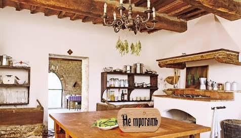

Подождать на кухне.
Как бы то ни было, вы поджидаете уже 2 часа и никто не пришел. Видимо, сегодня граф на кухню посреди ночи не прийдет
Тарелка с бананами всё еще стояла на столе
Почему светло? Потому-что найти тёмную кухню средневекого стиля нелегко, а фш времени не хватает

Продолжить передвижение по поместью